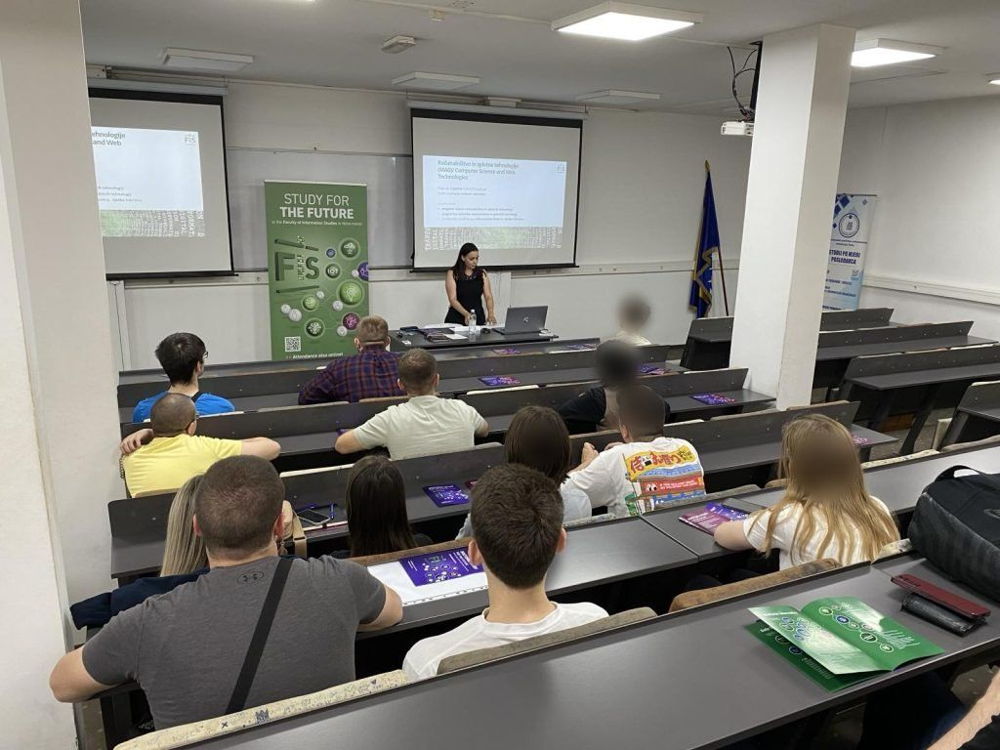

Propose a session
Bring an hour of what you know to Tuzla: a talk, a panel, a workshop or something else. Then a full hour off on Freedom Square with the people who came to hear you.
Why speak at GoatConf
GoatConf is a free conference in Tuzla for people who build and sell software: engineers, designers, product people, researchers and founders, in any language or stack. The first edition expects 120 to 300 people.
It is organised by Muhamed Isabegović, who founded and organised EuRuKo 2024, the first Ruby conference in Bosnia and Herzegovina, and RubyConf Austria.
First-time speakers are welcome. A strong idea counts for more than a famous name, and once your session is picked we help you get it ready.
Propose a sessionThe call is open. There is no strict deadline: slots fill as good proposals come in.
- 1One hourA room at IPI Academy, in your format, for people who build software.
- 2An hour offStraight after, in the cafés on Freedom Square, where the people who heard you can find you.
- 3PromotedYour profile on the speakers page and the program, and your session on GoatConf's social media.
- 4DinnerThe speakers dinner, with the other speakers. We pay for it. The date is still to come.
- 5RehearsalFirst time speaking? A call with us to go through your session, and a rehearsal at IPI Academy on Wednesday 2nd June.
- 6Recorded?We aim to record the sessions in the main hall and the first-floor hall. It depends on the budget, so it is not promised yet.
What a session can be
The call is for more than talks. Every slot is one hour, and you choose what happens in it. A format that is not on the list is shown on the program under its own name.
Workshops
The two computer centres, with 20 and 26 seats, suit workshops. You and everyone taking part bring your own laptops, since IPI Academy's computers are not part of GoatConf. A workshop that needs more than an hour can run longer: say how long in your proposal, and we work out the hours with you.
Half an hour
If you have something for 30 minutes, propose it. We may pair it with another short session to make an hour. This is meant for first-time speakers and anyone who would rather not fill an hour alone.
A session or an event?
A session takes one of the hour slots at IPI Academy on Thursday or Friday, and we pick it. A meetup, a dinner, a hackathon or a workshop that you run and pay for yourself, outside the session slots, on any day from 2 to 6 June, is an event: propose an event instead.
- 7TalkWith time for questions.Yours?
- 8PanelA few people on one question, with the room joining in.Yours?
- 9WorkshopPeople learn by doing, on the laptops they bring.Yours?
- 10Live codingBuild or show something on stage, or run a hands-on lab people follow on their laptops.Yours?
- 11Fireside chatAn interview, a debate or an open discussion, with the room asking questions.Yours?
- 12Not sure?Propose it anyway and say what you have in mind.Yours?
Who we are looking for
People with something worth an hour, from their own work or research. GoatConf is a technical conference for people who build and sell software, and every session is for them.
What matters is that people leave with something they can use or build on: a story from your own work, a way to think through a problem, or advice. Honest lessons are welcome, including what did not work. A pitch for your product or company does not fit, and neither does motivation with nothing to take home.
You do not need to write code to speak here, but the room is technical: a business, leadership or research session is for people who build software, and speaks to them as such.
Any part of the work
- Engineering, in any programming language or stack.
- AI/ML: models, LLMs and agents, and machine learning in production.
- Data: pipelines, analytics and data platforms, from the first query to production.
- UX/UI: designing software people understand, trust and like to use.
- Product: finding what to build, shaping it and shipping it.
- Research, from a university, a lab or a company, on how software is built, run or used.
- The business of software: founding a company, first customers, pricing, selling, hiring, funding or bootstrapping.
- Leadership: leading teams and companies, growing people, working with clients.
How a session is picked
- You send your idea through the form. It takes about fifteen minutes.
- We read it, the session first and your name after.
- You hear back, whatever the answer. There is no fixed reply time.
- Once you confirm, your session goes on the program. Its final day, time and room are set closer to the event, when the program is finalised.
We build the program at our own pace. A proposal that is not picked straight away may be kept, in case someone drops out and a slot needs filling.
A good idea that does not fit a slot can still happen. Run it as a meetup or an evening event around the talks, and add it.
Getting to Tuzla
You book your own trip and stay, as everyone coming to GoatConf does. Tuzla keeps that affordable: a room starts at about 38 € a night, and Hotel Vertigos is next door to IPI Academy. The old town, the Korzo and the lakes are a short walk away.
If your company covers it
Your company is listed on the site as a supporter of GoatConf, with its logo and link. The form asks about your travel.
If you pay your own way
Money from supporters that the event does not need goes first to refunding speakers who pay their own way, some or all of it, after the event. This is not promised, and it never affects whether your session is picked.
Make a trip of it
Stay for Saturday 5th June, the community's day: a day at the Pannonian salt lakes, the goat hunt through town, and the events people add. See the program.
What a stay costs
- Hotel Vertigos, a nightfrom 48 €
- A guesthouse, a nightfrom 38 €
- A mid-range hotel, a night40 to 65 €
- Bus from Sarajevo12 to 20 €
- City bus from Tuzla airport1.30 €
- A simple meal4.60 €
Hotels: checked October 2026, not June 2027 rates. Buses: estimates from travel sites. Meal: Numbeo, 2 October 2026.
Your slot
- One hour, in one of the rooms at IPI Academy, Kulina bana 2, Tuzla. A slot may also hold two 30-minute sessions.
Thursday 3rd June 2027: 10:00, 12:00, 14:00 or 16:00.
Friday 4th June 2027: 09:30, 11:30, 13:30 or 15:30. - Then an hour off in the cafés on Freedom Square.
- In English. Every room has a projector with HDMI.
- No microphones needed. The rooms have no microphones, and they do not need them: the acoustics are good for their size. See accessibility.
- The final day, time and room are set closer to the event, when the program is finalised. See the program.
The rooms and their seats
Main hall (ground floor, 150 seats); First-floor hall (100 seats); Second-floor room (34 seats); Computer centre 1 (20 seats); Computer centre 2 (26 seats); Top-floor room (24 seats); The old student club (13 seats).
What the form asks
Have these ready:
- a title and the format
- a few short paragraphs: what it is about, and what people take away
- who it is for, and at what level
- its area: what the session is about, as many as apply
- the day you prefer
- the name of each speaker
- a link about you (optional)
- whether it is your first talk
- a short bio, and your agreement that, if your session is accepted, GoatConf publishes your speaker profile and promotes you on social media
- anything that would help us make it work for you
Your profile
If your session is accepted, your profile goes on the speakers page: your name, a short bio in your own words, a photo and links. Your session shows its area and who it is for, from your answers on the form, so people can find the sessions meant for them. The program links your name to it, and GoatConf promotes you and your session on social media.
This is part of speaking at GoatConf, so by proposing a session you agree to it if your session is accepted. We ask for a photo by email after that.
By sending the form you accept the code of conduct.
Propose a sessionIt takes about fifteen minutes.